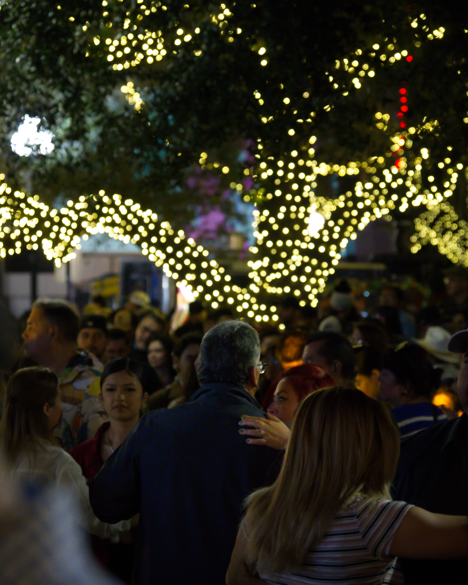

Developer · Photographer · Creator
Stories, not
just photos.
I'm Francisco Benavidez, a 21-year-old creative from Brownsville, Texas. Senior at UTRGV pursuing Computer Science with a minor in Film Production — building software and shooting visuals that merge technology with creativity.

Selected Work
Featured Projects
Highlights from my photography portfolio. Click any category to explore.


About Me
Born in Brownsville,
built online.
I grew up in Brownsville, Texas, graduated from Gladys Porter Early College High School in 2022, and have always been drawn to how things work — from code to cameras.
Photography and videography became my creative outlet — a way to tell stories visually. I built this site from scratch on GitHub Pages as a living portfolio of both my technical and creative work.
View Full Resume →